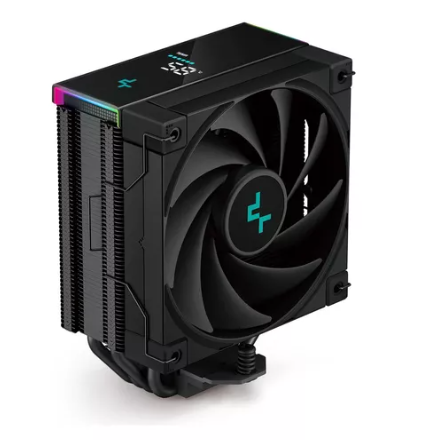
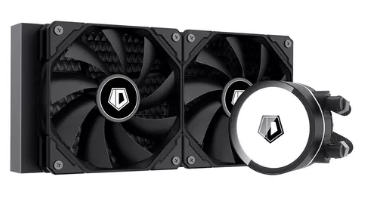
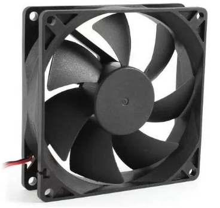
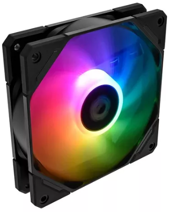

Refrigeración Líquida Cooler Master Masterliquid 240l Core MLW-D24M-A17PK-R1 240mm Led Negro para Intel y AMD
VENTILADORES DE 120 MM:
El ventilador mejorado de 120 mm ofrece un rendimiento óptimo del radiador.
SUPERFICIE AMPLIADA DEL RADIADOR:
La superficie ampliada de las aletas del radiador acelera la disipación del calor para una refrigeración superior.
BOMBA DE DOBLE CÁMARA GEN S:
La base de cobre rediseñada apunta a los puntos calientes con precisión junto con un mayor flujo de agua y presión para mejorar el rendimiento de enfriamiento.
PASTA TERMICA CRYOFUZE:
Incluye pasta térmica CryoFuze premium para una conductividad térmica excepcional.
DISEÑO CLÁSICO LIMPIO:
El diseño limpio y minimalista aporta un lavado de cara moderno y renovado a la tapa de la bomba.
Cpu Watercooling Redragon Effect X A-rgb Liquid Dual 120 Mm LED [Memórias RAM
Durabilidad avanzada:
El CCW 3000 posee tubos anti fuga que hacen
que este sistema todo-en-uno tenga un
mantenimiento prácticamente nulo.
El tubo maneja alta presión en calor extremo,
lo que se suma al proceso de enfriamiento.
Iluminación led RGB:
El Effect X incorpora un sistema de
iluminación LED RGB configurable,
o ARGB, que puedes personalizar a
tu preferencia para salir a la batalla
como a ti te gusta.
La más amplia compatibilidad:
Compatible con los sockets más populares y de mayor
circulación en el mercado. Desde los más modernos
hasta los viejos y fieles.
Ventiladores RGB:
Dos ventiladores RGB proporcionan suficiente
flujo de aire y presión para enfriar eficazmente
la temperatura con un nivel sonoro increíblemente
bajo en comparación a los sistemas de su tipo.
Cooler Master MasterLiquid Lite MLW-D24M-A18PC-R2 RGB
AVANCE, CALIDAD, RENDIMIENTO:
Nuevo diseño de bomba con componentes internos mejorados para una mayor resistencia al desgaste y un rendimiento más duradero. EPDM de grado industrial especialmente formulado utilizado para sellado reforzado para la prevención de fugas.
NUEVA BOMBA DE CÁMARA DOBLE DE TERCERA GENERACIÓN:
Experimente un rendimiento de enfriamiento más silencioso con un diseño mejorado en el impulsor interno y la carcasa para mejorar el rendimiento y la eficiencia de enfriamiento al reducir el nivel de ruido.
ÁS ÁREA, MÁS DISIPACIÓN:
Cuanto más área de superficie, mejor es la disipación de calor, con un aumento de más del 20% en el área de superficie del radiador para una mejor eficiencia de enfriamiento.
NUEVO SICKLEFLOW 120 RGB:
Nuevo SickleFlow 120 RGB con todas las aspas del ventilador Air Balance optimizadas, cojinete de rifle innovador y marco de ventilador más duradero para un rendimiento de enfriamiento más silencioso.
ILUMINACIÓN RGB COMPLETA:
Experimente la forma más colorida de enfriar con bombas y ventiladores listos para RGB que son compatibles con el software pero también certificados como compatibles con los principales fabricantes de placas base. o un rendimiento de enfriamiento más silencioso.
Deepcool AG620 R-AG620-BKANMN-G-1 - RGB
Procesador DeepCool AG620 ARGB de doble torre, 120 mm, negro Dimensiones del producto:
129 x 136 x 157 mm (largo x ancho x alto)
Dimensiones del disipador térmico:
127 x 110 x 157 mm (largo x ancho x alto)
Peso neto:
1300 g
Tubo de calor:
0,6 mm x6 piezas
Dimensiones del ventilador:
120x120x25 mm (LxWxH)
Velocidad del ventilador:
300-1850 RPM +/ -10%
Ruido del ventilador:
29,4 dB (A)
Voltaje nominal del LED:
5 VDC
COOLER GAMA MEDIA
Disipador Deepcool Ak400 Zero Dark Plus Lga1700/am5 1650rpm Led N/a
Este componente electrónico procesa la información que llega al dispositivo y los transforma en imágenes o videos para mostrarla visualmente. Es ideal para trabajar con aplicaciones gráficas ya que permite obtener imágenes más nítidas.
Cooler Cpu Deepcool Ak400 Digital Con Display Argb 220w Tdp!

Este componente electrónico procesa la información que llega al dispositivo y los transforma en imágenes o videos para mostrarla visualmente. Es ideal para trabajar con aplicaciones gráficas ya que permite obtener imágenes más nítidas.
Cpu Watercooling Id-cooling Frostflow 240 Xt 240mm 250w Tdp! Led Negro

El ID-COOLING FROSTFLOW 240 XT es un sistema de refrigeración líquida de alto rendimiento diseñado para mantener tu CPU en óptimas condiciones. Con un TDP de 250W, este watercooling es ideal para gamers y entusiastas del hardware que buscan una solución eficiente y confiable. Compatible con una amplia gama de sockets, incluyendo Intel LGA2066/2011/1700/1200/1151/1150/1155/1156 y AMD AM5/AM4, garantiza una instalación sencilla y versátil. Equipado con ventiladores de 120 mm, ofrece una excelente disipación de calor. Su diseño robusto y duradero asegura que no tendrás que preocuparte por el vencimiento del producto. Mejora el rendimiento de tu sistema con la línea WATERCOOLING 240MM de ID-COOLING.
COOLER GAMA BAJA
Cooler Cpu Gamer Intel Socket Rave 4 120mm 1800rpm Argb
Material: Aluminum Caño: Dia. 6mm x 4 Dimensiones: 125 x 80 x 135mm TDP: 130 Velocidad: 900-1800 rpm Conector: PWM 4-Pin Dimensiones: 120 x 120 x 25mm Tipo de Rodamiento: Hydraulic Bearing Voltaje de arranque: 5V Voltaje: 12V Corriente: 0.5 A Consumo: 6 Watts Presión: 0.6-1.6 mm-H2O Flujo de aire: 24.1-58.0 CFM Ruido: 18-27 dBA MTBF (Mean Time Before Failure): 60000 hrs. Socket: LGA 1700 / 1200 / 115X / 775, AM5 / AM4 / AM3+/AM3 / AM2+/AM2 / FM2/ FM1
Fan Led Cooler 12cm Colores Rojo Verde Rgb Cpu 120 Mm Ditron
Marca: DITRON Modelo: SK-COOL4 Medida: 120 x 120 mm Conector: 4 pines Color: Transparente
Cooler Fan Ventilador 120 X 120 12v 4 Pines Mother Gabinete Led Negro

El Cooler Fan Ventilador 120 X 120 12v 4 Pines Mother Gabinete es la solución ideal para mantener tu PC en óptimas condiciones. Diseñado por la reconocida marca Ditron, este ventilador de refrigeración es perfecto para reemplazar coolers en fuentes de alimentación o para conectar directamente a 12V. Con un tamaño de 120x120x25 mm y un elegante color negro, se adapta fácilmente a cualquier gabinete de PC. Su conexión Molex garantiza una instalación sencilla y segura. Incluye tornillos para una fijación firme y segura. Aunque no cuenta con cable de control RPM, su eficiencia en la refrigeración por aire lo hace indispensable. Este producto viene en blister, asegurando su protección hasta el momento de uso. Ideal para quienes buscan un componente compatible con gabinetes y fuentes, sin necesidad de características gamer. Con Ditron, aseguras calidad y durabilidad en cada uno de tus componentes de refrigeración.
Cooler Fan Id-cooling 120mm Pwm Antivibración Tf-12025-argb Led Argb

- Ventilador de 120mm con control PWM para un ajuste automático de la velocidad según la temperatura del sistema.
- Tecnología antivibración para minimizar el ruido durante el funcionamiento.
- Iluminación ARGB compatible con diversos sistemas de sincronización de colores para personalizar la estética de tu equipo.
- Aspas optimizadas para un flujo de aire eficiente y una presión estática mejorada.
- Diseño duradero y de alto rendimiento para mantener tu sistema refrigerado de manera efectiva.